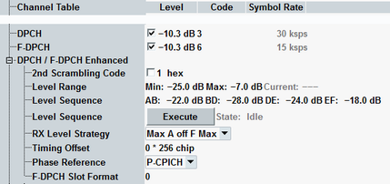
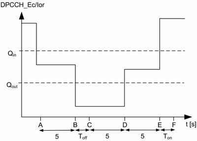
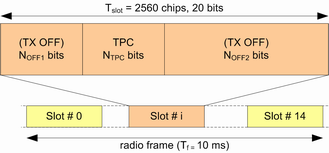

This section describes the downlink settings of dedicated physical channels. For an active connection, only one type of channel can be active.

The column titles of the channel tables (e.g. "Level") do not apply to the "... Enhanced" settings.
Defines the level of a channel relative to the base level of the generator (see "Output Power (Ior)").
The settings of DPCH level and F-DPCH level are equal. For an active connection, only one type of channel can be active. For most connections DPCH is used. F-DPCH is activated instead of DPCH while the CPC feature is active or while a secondary uplink is enabled. F-DPCH is then displayed in the code domain diagram instead of DPCH, see "Code Domain Diagram".
Option R&S CMW-KS413 is required for F-DPCH.
For background information, see "Power Levels".
Remote command:Defines the channelization code number of a channel.
For background information, see "Channelization Codes"
Remote command:Displays the symbol rate of DPCH / F-DPCH. It depends on the connection configuration (e.g. connection type, data rate, ...).
The following enhanced settings apply to DPCH and F-DPCH.
Defines index k used for calculation of a secondary scrambling code number by adding k to the value of parameter "Primary Scrambling Code".
If the secondary scrambling code is deactivated, the primary scrambling code is used.
Remote command:Specifies the allowed range for the variation of the DPDCH power level for the downlink power control. This setting is common for all carriers.
The R&S CMW varies its DL DPCH/F-DPCH power in response to TPC commands from the UE, until the UE has reached a specified DTCH target link quality. If downlink power control is activated, the power configured according to the received TPC bits is indicated as "Current". In a scenario with multiple uplink carrier, individual values are displayed per carrier.
A TPC command from the UE adjusts the DPCH/F-DPCH level across all symbols. If the OCNS is switched on, it is also adjusted so that the output channel power ("Ior") is kept constant. DPCH/F-DPCH and OCNS adjustments are synchronous.
Remote command:Specifies the level of the points A to F to define the power mask for "WCDMA Out-Of-Sync Handling" Tx measurement. The R&S CMW generates the signal with the specified DPCH level. Downlink power control is disabled by default.
The following diagram displays downlink DPCH level as specified by 3GPP, TS 34.121, section 5.4.4 "Out-of-synchronisation handling of output power". The default settings of R&S CMW correspond to 3GPP requirements.

The button "Execute" initiates the DPCH level transitions in downlink according to the power mask. The WCDMA signaling also generates the trigger signals suitable for TX measurements, see "Out of sync sequence trigger". State is displayed for information to monitor the progress DPCH signal.
For details, refer to the documentation of "WCDMA Out-Of-Sync Handling Measurement" within the option R&S CMW-KM400, WCDMA UE TX measurements.
Remote command:Specifies the algorithm of UE level control in uplink for "WCDMA Out-Of-Sync Handling Measurement" within the option R&S CMW-KM400.
- "Max A off F Max": measurement in line with specification. All measured values in whole measurement interval A to F are compared with the "Power Off Upper Limit" or the "Power On Lower Limit". Expected nominal power value is then set automatically with a reserve for the high uplink level dynamics. It causes, that the UE transmit power cannot be exactly determined by the measurement application.
- "Max B off F Max": measurement not in line with specification. In the interval A to B, where transmit power is near maximum output power, the measurement application can measure the exact UE transmit power. In the interval B to F, the UE transmit power values are only compared with the "Power Off Upper Limit" or the "Power On Lower Limit".
- "Max C off E Max": measurement not in line with specification. In the interval A to C, where transmit power is near maximum output power, the measurement application can measure the exact UE transmit power. In the interval C to E, the UE transmit power values are only compared with the "Power Off Upper Limit" or the "Power On Lower Limit". In the interval E to F, where transmit power is near minimum output power, the measurement application can measure the exact UE transmit power.
Defines the offset between the DL P-CCPCH timing and the DL DPCH timing. The timing offset is a multiple of 256 chips (1/10 slot).
This parameter impacts also uplink channels, as the UL DPCH is separated by 1024 chips (4/10 slots) from the DL DPCH (see 3GPP TS 25.211, chapter 7).
Remote command:Setting is according to 3GPP TS 25.211, table 16C.

Note that release 6 supports only slot format 0, release 7 supports all slot formats.
Slot format | Channel bit rate in kbit/s | Channel symbol rate in ksymbol/s | SF | Bits per slot | NOFF1 | NTPC | NOFF2 |
|---|---|---|---|---|---|---|---|
0 | 3 | 1.5 | 256 | 20 | 2 | 2 | 16 |
1 | 3 | 1.5 | 256 | 20 | 4 | 2 | 14 |
2 | 3 | 1.5 | 256 | 20 | 6 | 2 | 12 |
3 | 3 | 1.5 | 256 | 20 | 8 | 2 | 10 |
4 | 3 | 1.5 | 256 | 20 | 10 | 2 | 8 |
5 | 3 | 1.5 | 256 | 20 | 12 | 2 | 6 |
6 | 3 | 1.5 | 256 | 20 | 14 | 2 | 4 |
7 | 3 | 1.5 | 256 | 20 | 16 | 2 | 2 |
8 | 3 | 1.5 | 256 | 20 | 18 | 2 | 0 |
9 | 3 | 1.5 | 256 | 20 | 0 | 2 | 18 |